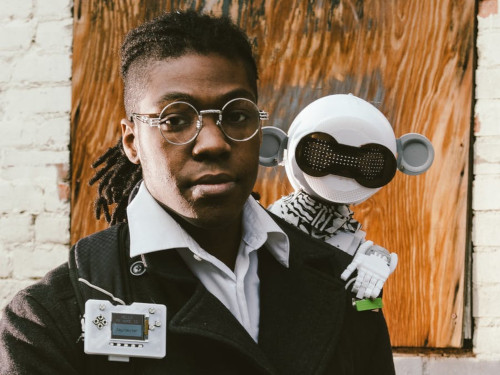

Thank you for helping out! Just follow the directions below to submit snippets of your voice. These will be used in a machine learning project to make robots respond to specific phrases.
I am working on a number of things that I would like to respond to someone shouting "Hadouken!" I am also collaborating with a few of my friends to give voice recognition to their companion bot projects.
Jorvon Moss (@Odd_Jayy) is working on a number of companion bots. In particular, he is making a dragon. I'll let you guess what happens when someone says "dracarys."
Alex Glow (@glowascii) has her owl familiar, Archimedes, as well as a new fennec fox named "Fenrir." She would like both of these bots to respond to a variety of words (including their names).
Just follow these steps! Please try to make each recording with no background noise, if possible.
1. We have several different words or phrases that we'd like you to say. Under each phrase, press the Record button and say the word or phrase. Accept any pop-ups that ask you to use your computer/phone's microphone. Note that timing is sometimes off, as it might take a fraction of a second to actually begin recording. Take look at the browser tab or phone's notification bar: you should see a recording symbol when recording is actually happening.
2. Please make several recordings of each word/phrase using different inflections! It will help the training process.
3. Play back each recording to make sure that the word or phrase is easily understood (and not truncated).
4. For each word or phrase recording that you are happy with, click the Upload to server link next to it.
By uploading your voice, you're giving me consent to use it in an aggregate fashion as part of a machine learning exercise. They will only be used as part of a personal project for non-commercial purposes. Code for the project will be open source and available on GitHub.
Audio recordings will be labeled with non-identifying information (so people won't know who is speaking). All recordings will be bundled and available as a .zip file for anyone to download to use in their machine learning projects, similar to the Google Speech Commands dataset.
This section will automatically update with your sample rate when you start recording.
Say: "Dracarys!" (pronunciation: "drah-KAH-ris." Here's a video.)
Recordings:
Say: "Hadouken!" (pronunciation: "ha-DOH-ken" or "ha-DEW-ken." Here's a video.)
Recordings:
Say: "Fenrir" (pronunciation: "FEN-reer." Here's a video.)
Recordings:
Say: "Archie" (pronunciation: "AR-chee." Here's a site.)
Recordings:
Say: "Archimedes" (pronunciation: "AR-kuh-mEE-deez." Here's a video.)
Recordings:
Say: "Hey Archie!"
Recordings:
Say: "Hey Fen!"
Recordings:
Say: "Hey Fenrir!"
Recordings:
Say: "Goodnight"
Recordings:
Say: "How are you?"
Recordings:
This page is based on the simple-recorder-js demo project. Many thanks to Andrew Jaswa for helping me modify that demo project into what you see here.
Copyright 2020 | Shawn Hymel